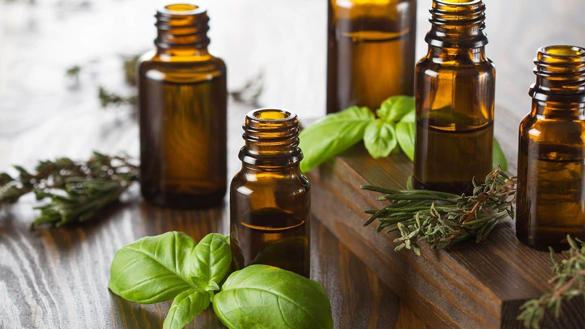

ESSENTIAL OILS – A NATURAL MEDICINE WITH A MULTITUDE OF BENEFITS
Essential oils have been in use for thousands of years and are one of the most powerful forms of plant-based medicine.

It’s referenced more than 300 times in the Bible, it’s also used in Egyptian medicine, Chinese medicine and Ayurvedic medicine.
Far superior to any dried medicinal herb, essential oils contain the lifeblood of the plant and preserve all its medicinal qualities.
You can either use them topically (rub into the skin), inhale them from the bottle or used in a diffuser.
It is important to use therapeutic grade… as not all essential oils are created equal. Cheaper oils have been cut and diluted with toxic chemicals that increase the volume of the oil but decrease its therapeutic value.
Be sure to only use organic – nonorganic oils are sprayed with pesticides, which leech into the oil.
Drug companies know they work
Pharma companies copy the chemical compounds of many essential oils to make medicine. Unfortunately, the cheap, copied versions that drug companies use don’t work as effectively and come with a host of side effects.
One of the greatest detoxifiers known to man
Modern day living is very toxic. mercury, lead and arsenic can stay in our bodies forever if we don’t detoxify.
Essential oils are the perfect way to expel foreign compounds – helping the body rejuvenate.
The environmental working group did a study on umbilical cords and found that every umbilical cord had at least 247 foreign chemicals… 180 of those toxins were cancer causing… so before these babies are even born, they are exposed to a multitude of life-altering chemicals.
Our body tries to expel these foreign compounds using: respiration, defecation, urination, perspiration and lymphatic flow. Essential oils support all these five pathways to remove toxins.
Why do we use essential oils for cleansing, rejuvenation and detoxification?
4 therapeutic dimensions of essential oils:- Oxygen – essential oils have been documented to possess the highest level of oxygenating molecules of any substance known to man.
- Small molecular size – the molecules of essential oils are smaller than the molecules in our skin cells which means they can be absorbed into our skin and organs.
- High frequency – essential oils vibrate at a very high frequency. By using essential oils you are able to raise the frequency of your body. When we raise our vibration; we heal faster.
- Colds and the Flu start at 57–60 MHz
- Disease starts at 58 MHz
- Receptive to Cancer at 42 MHz
- Death begins at 25 MHz
- Homeostatic Intelligence – essential oils carry the life force of the plant.
Which oils do I start with first?
Firstly; don’t make the mistake of thinking you need a rack full of essential oils to reap the most benefits. Pick out a small selection that you think will suit your needs and try to incorporate them into your daily routine.
Below is a list of my personal favorites; along with some handy oils to keep in your cupboard (not a complete list of everything)
Frankincense oil – is considered a great ‘all-rounder’. If you’re ever in doubt; this is the perfect ‘go-to’.
Frankincense has been used for thousands of years. It is often referenced in the bible and throughout history. It has been as valuable as gold because of its potent medicinal benefits.
Frankincense has a chemical compound called alpha pinene which has antiseptic properties – and in terms of petri dish studies, frankincense has been shown to fight cancer. This doesn’t mean that frankincense alone is a cure-all, but combined with other therapies, frankincense oil can be a natural cancer-fighting agent.
Frankincense oil is fantastic for your skin… it’s great for evening out skin tone, perfect for skin conditions, blemishes, stretch marks, scars, cellulite, varicose veins… and it is incredibly popular for anti ageing. Rosehip oil alone is fantastic for your skin, but when you use it as a carrier oil for frankincense oil, you are treating yourself to the greatest natural skincare product you can get.
Frankincense is a powerful tool against inflammation.
Inflammation is the root cause of many common diseases. Any disease with ‘itis’ at the end of its name means the disease is inflammatory – gingivitis, arthritis, bronchitis etc… It’s especially effective for joint inflammation or skin inflammation.
Increased spiritual awareness – great for prayer or meditation. Many yoga instructors infuse this oil before and during a class.
Frankincense is great for supporting your immune system… if your glands are swollen, rub a few drops on your neck.
If you’re looking for top quality; look for frankincense from the Middle East.
Lemon oil – Antifungal, antiviral, antibacterial. Lemon oil will boost your immune system up to 300%. It stimulates our lymphatic system. It gently cleanses the liver and gallbladder.
Lavender oil – Lavender oil is widely known to be relaxing. If you have trouble with insomnia; add a few drops to your pillow before sleep… or rub some on your temples or under your nose.
Lavender is great for acne. Add a few drops to your moisturizer before applying.
Lavender oil is great for fighting high blood pressure.
Rosemary oil – Is also wonderful for lowering high blood pressure. It also invigorates the mind and a great tool for memory function.
Rosemary oil is also great for thickening your hair.
Cinnamon and holy basil oil – Has been shown to fight diabetes
Cinnamon and holy basil oil are an excellent supplement to the ketogenic diet (fights diabetes and metabolic syndrome). If you have insulin resistance (which is a precursor to type-2 diabetes) these oils will help you balance your blood sugar levels and shift stubborn weight.
Thieves blend (another great ‘all-rounder’) – This is a combination of cinnamon, rosemary, clove, eucalyptus, and lemon.
Thieves blend is a powerful anti-viral, anti-fungal, antibacterial substance. Webber State University did a study where they diffused thieves oil in a room that had been contaminated with pathogens viruses and bacteria and fungi – and within 15 minutes, 96% of the bacteria, viruses and fungi had been eradicated.
Peppermint oil – is great for increased mental clarity and treating headaches.
It’s also a wonderful oil to help stimulate digestion, for treating bloating or overeating as well as indigestion.
People with ear, nose and throat problems can benefit greatly with peppermint oil because it opens up respiratory pathways.
Turmeric oil – also really good for inflammation… so many modern diseases are caused by inflammation. This oil contains tumerone which supports stem cell growth and promotes healthy nerve tissue.
Vetiver and Cedarwood oil – are a great natural treatment for ADD and ADHD.
Wintergreen and black pepper oil – for pain (don’t consume orally).
Ylang Ylang and orange oil – for depression.
Applications
When rubbing essential oils into the body; you can either rub it into the skin undiluted or mix the recommended dose with a carrier oil like coconut oil.
Many experts recommend rubbing essential oils into the soles of the feet because the pores of the feet are particularly absorbent and rapidly deliver the medicinal benefits to the bloodstream.
According to reflexologists; every nerve line of the body ends in the feet. Reflexologists maintain that certain areas of the feet correspond to the body’s organs. By using essential oils on your soles you are targeting the organs directly.
Some experts recommend applying essential oils to the belly button. The rationale behind this is that the belly button was once attached to an umbilical cord. This umbilical cord was once the single lifeline for all your nutrients.
I can report personally that my brother uses frankincense oil on his belly button, and since then his chronic acid reflux has cleared up for good.
Cautions
Remember: always read the label before using, and always use organic, uncut, undiluted oils.
Always follow the recommended doses… don’t overdo it.
See an expert before using essential oils on a baby.
A diffuser is a great option in the winter when the air is dry. Or if you simply love the therapeutic aroma.
If you’re looking to learn more: ‘The Fragrant Pharmacy’ by Valerie Ann Worwood is the best book on the market (in my opinion).
https://www.ncbi.nlm.nih.gov/pmc/articles/PMC5456241/
Please leave a comment in the comment section below if I’ve left out an oil you find particularly effective.